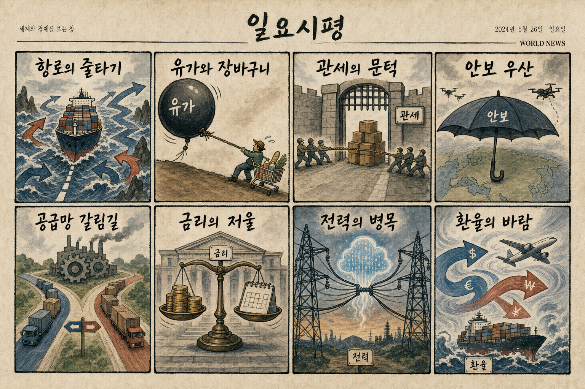
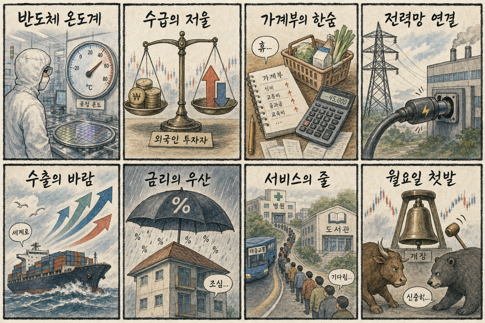

01
엔비디아 2.21% 하락…중국 AI ‘키미 K3’ 충격에 AI 대표주 압박
내용요약 7월 17일 미국 정규장 종가를 야후 파이낸스 일봉으로 비교한 결과입니다. 중국 AI 모델 경쟁과 기술주 위험회피가 나스닥 약세와 함께 개별 종목에 반영됐습니다.
예상여파 국내에서는 반도체·AI 대형주의 시초가와 외국인 수급에 직접 연결될 수 있어 낙폭 축소 여부를 확인해야 합니다.
MORNING_BRIEFING_20260720
작성 시각: 2026-07-20 06:40 KST · 직전 미국장 및 2026-07-20 KST 당일 공개 기사 기준
직전 미국 정규장인 7월 17일 장의 지수별 종가를 기준으로 월요일 한국장 영향을 점검했습니다. 주말 사이 국제 뉴스와 미국 지수 선물의 변화가 더해지는 만큼, 개장 초 반도체 대형주·환율·외국인 선물 수급을 함께 봐야 합니다.
| 지수 | 종가 | 전일 대비 | 한국 증시 영향 |
|---|---|---|---|
| 다우존스 | 52,146.42 | -0.77% | 경기민감·방어주 간 온도차가 커져 코스피 대형주 선별 흐름에 영향 |
| S&P 500 | 7,457.69 | -1.01% | 위험선호 둔화 여부가 외국인 수급과 지수 변동성을 좌우 |
| 나스닥 종합 | 25,520.24 | -1.40% | 반도체 반등 여부가 국내 AI·성장주 심리에 직접 연결 |
다우존스 52,146.42(-0.77%); S&P 500 7,457.69(-1.01%); 나스닥 종합 25,520.24(-1.40%)입니다. 금요일 마감 방향과 주말 뉴스의 간극을 월요일 개장가가 반영합니다.
미국 AI·반도체주의 흐름이 국내 HBM 대표주와 장비주 수급으로 이어지는지 우선 확인합니다.
데이터센터 전력·ESS 수요는 유효하지만 실적 가시성과 단기 가격 부담을 분리해 봐야 합니다.
원/달러 환율, 외국인 현·선물 매매, 반도체 대형주의 전 거래일 저점 지지가 핵심입니다.
| 종목 | 전일 등락률 | 메모 |
|---|---|---|
| SK하이닉스 | -11.53% | 2,082,000원 → 1,842,000원. 나스닥과 AI 반도체 흐름이 국내 HBM 대표주 수급으로 연결되는 종목 |
| HD현대일렉트릭 | -3.16% | 823,000원 → 797,000원. AI 데이터센터 전력·ESS와 전력망 투자 논리가 연결되는 종목 |
| 한화에어로스페이스 | +1.51% | 929,000원 → 943,000원. 중동·우크라이나 안보 뉴스가 방산 수출 기대와 연결되는 종목 |
| 지수 | 종가 | 전일 대비 | 해석 |
|---|---|---|---|
| 다우존스 | 52,146.42 | -0.77% | 경기민감·방어주 간 온도차가 커져 코스피 대형주 선별 흐름에 영향 |
| S&P 500 | 7,457.69 | -1.01% | 위험선호 둔화 여부가 외국인 수급과 지수 변동성을 좌우 |
| 나스닥 종합 | 25,520.24 | -1.40% | 반도체 반등 여부가 국내 AI·성장주 심리에 직접 연결 |
방산, 데이터센터 전력망·ESS, 통신·필수소비 등 방어 업종
AI 반도체·고밸류 성장주, 유가 민감 항공·화학, 실적 가시성이 낮은 테마주
내용요약 7월 17일 미국 정규장 종가를 야후 파이낸스 일봉으로 비교한 결과입니다. 중국 AI 모델 경쟁과 기술주 위험회피가 나스닥 약세와 함께 개별 종목에 반영됐습니다.
예상여파 국내에서는 반도체·AI 대형주의 시초가와 외국인 수급에 직접 연결될 수 있어 낙폭 축소 여부를 확인해야 합니다.
내용요약 7월 17일 미국 정규장 종가를 야후 파이낸스 일봉으로 비교한 결과입니다. 중국 AI 모델 경쟁과 기술주 위험회피가 나스닥 약세와 함께 개별 종목에 반영됐습니다.
예상여파 국내에서는 반도체·AI 대형주의 시초가와 외국인 수급에 직접 연결될 수 있어 낙폭 축소 여부를 확인해야 합니다.
내용요약 7월 17일 미국 정규장 종가를 야후 파이낸스 일봉으로 비교한 결과입니다. 중국 AI 모델 경쟁과 기술주 위험회피가 나스닥 약세와 함께 개별 종목에 반영됐습니다.
예상여파 국내에서는 반도체·AI 대형주의 시초가와 외국인 수급에 직접 연결될 수 있어 낙폭 축소 여부를 확인해야 합니다.
내용요약 7월 17일 미국 정규장 종가를 야후 파이낸스 일봉으로 비교한 결과입니다. 중국 AI 모델 경쟁과 기술주 위험회피가 나스닥 약세와 함께 개별 종목에 반영됐습니다.
예상여파 국내에서는 반도체·AI 대형주의 시초가와 외국인 수급에 직접 연결될 수 있어 낙폭 축소 여부를 확인해야 합니다.
내용요약 7월 17일 미국 정규장 종가를 야후 파이낸스 일봉으로 비교한 결과입니다. 중국 AI 모델 경쟁과 기술주 위험회피가 나스닥 약세와 함께 개별 종목에 반영됐습니다.
예상여파 국내에서는 반도체·AI 대형주의 시초가와 외국인 수급에 직접 연결될 수 있어 낙폭 축소 여부를 확인해야 합니다.
월요일 한국장은 직전 미국장과 주말 국제 뉴스가 한꺼번에 가격에 반영될 수 있습니다. 반도체 대형주의 외국인 수급, 원/달러 환율, 미국 지수 선물을 우선 확인하고 주말 뉴스에 따른 시초가 급등 종목은 거래대금의 지속성을 따로 봐야 합니다.
| 한국 종목 | 연결 이유 | 단기 확인 포인트 |
|---|---|---|
| SK하이닉스 | 미국 반도체 급락과 메모리 업황 우려가 국내 HBM 대표주의 가격 발견 과정으로 직접 연결됩니다. | 미국 반도체 선물, 외국인 매도 강도, 전일 저점 지지와 낙폭 축소 |
| HD현대일렉트릭 | AI 데이터센터 확대가 전력기기·전력망 투자 수요로 이어져 반도체 조정기에도 차별화 논리를 가집니다. | 전력기기 동반 강도, 신규 수주 뉴스, 기관 수급과 밸류에이션 부담 |
| 한화에어로스페이스 | 중동·우크라이나 안보 뉴스가 방산 수출 기대와 고환율 효과를 함께 자극할 수 있습니다. | 전일 고가 지지, 방산 섹터 상대강도, 국제 안보 뉴스의 후속 강도 |
주말 누적 재료가 외국인 현·선물 수급과 코스닥 거래대금에 어떻게 반영되는지 봅니다.
당일 국제 뉴스가 원/달러 환율과 국제유가 기대에 미치는 영향을 점검합니다.
직전 미국 반도체 흐름 뒤 국내 대형주의 방향과 저가 매수 유입 여부를 확인합니다.
나스닥 선물 방향이 국내 성장주의 장중 위험선호를 지지하는지 봅니다.
핵심 요약: AI 산업은 반도체 수요 논쟁, 데이터센터 전력망, AI 활용 신뢰성, 중국·미국 기술 통제 이슈가 동시에 움직이고 있습니다.
내용요약 미국 정보당국이 UAE AI 기업과 중국의 연계 의혹을 조사했다는 보도입니다. 첨단 AI칩과 데이터센터 투자가 안보 심사의 영역으로 더 깊이 들어가고 있습니다.
예상여파 AI칩 수출 통제와 중동 데이터센터 계약의 심사 강도가 높아져 글로벌 반도체 공급망 불확실성이 커질 수 있습니다.
내용요약 알리바바가 엔비디아의 쿠다 생태계를 겨냥한 AI칩 소프트웨어를 무료 공개했다는 보도입니다. 중국의 독자 AI 연산 생태계 구축 경쟁이 소프트웨어 층까지 확대되고 있습니다.
예상여파 엔비디아 생태계의 장기 경쟁 구도와 중국향 AI칩 공급망 재편이 국내 반도체·서버 업체의 수요 전망에도 영향을 줄 수 있습니다.
내용요약 AI 반도체와 메모리 공급망을 둘러싼 당일 기사입니다. 투자자들은 실적 눈높이와 수요 둔화 가능성을 동시에 확인하고 있습니다.
예상여파 삼성전자·SK하이닉스·반도체 장비주의 장중 수급이 민감하게 반응할 수 있습니다.
내용요약 AI 데이터센터 확대가 전력망·ESS·인프라 투자로 이어지는 흐름을 다룬 기사입니다. 병목이 전력 설비 영역으로 옮겨가는 모습입니다.
예상여파 전선·전력기기·원전·ESS 밸류체인은 개별 수주와 정책 뉴스에 따라 상대강도를 보일 수 있습니다.
내용요약 한국 로봇 부품 스타트업이 엔비디아 밸류체인 진입을 확대하고 있다는 보도입니다. AI 투자가 데이터센터를 넘어 피지컬 AI와 정밀 부품으로 번지고 있습니다.
예상여파 로봇 감속기·센서·정밀부품 종목에는 관심이 붙을 수 있지만 실제 공급 계약과 매출 인식 시점을 분리해 확인해야 합니다.
핵심 요약: 이란 원전 건설 현장 피격 주장과 러시아의 우크라이나 대규모 공세가 지정학적 위험을 높였습니다. 유럽 산불, 이스라엘의 미국 여론전, 중국의 풍력 터빈 점유율 확대도 에너지·공급망 변수를 키우고 있습니다.
내용요약 핵·에너지 시설과 대규모 미사일 공격을 둘러싼 군사 긴장이 확대됐다는 당일 보도입니다. 에너지 안보와 민간 피해 우려가 함께 커졌습니다.
예상여파 국제유가·해운·방산의 위험 프리미엄이 높아질 수 있고, 원/달러 환율과 아시아 위험자산에도 부담이 될 수 있습니다.
내용요약 핵·에너지 시설과 대규모 미사일 공격을 둘러싼 군사 긴장이 확대됐다는 당일 보도입니다. 에너지 안보와 민간 피해 우려가 함께 커졌습니다.
예상여파 국제유가·해운·방산의 위험 프리미엄이 높아질 수 있고, 원/달러 환율과 아시아 위험자산에도 부담이 될 수 있습니다.
내용요약 스페인에서 서울 면적의 절반에 이르는 산림이 소실되는 등 유럽의 폭염·산불 피해가 확대됐다는 보도입니다. 기후 재난이 인명과 지역 경제를 동시에 압박하고 있습니다.
예상여파 전력 수요와 농산물·보험 비용 변동성이 커질 수 있고, 유럽 여행·물류 일정에도 단기 차질이 생길 수 있습니다.
내용요약 이스라엘이 미국 내 여론을 바꾸기 위해 대규모 홍보 예산을 집행한다는 보도입니다. 가자 전쟁을 둘러싼 외교전이 군사 영역에서 여론·정책 영역으로 확장되고 있습니다.
예상여파 미국의 중동 정책과 휴전 압박 강도에 영향을 줄 수 있어 에너지·해운·방산의 위험 프리미엄이 이어질 수 있습니다.
내용요약 중국 업체들이 아시아·아프리카 수요를 바탕으로 세계 풍력 터빈 시장의 79%를 차지했다는 보도입니다. 가격 경쟁력과 공급망 규모가 점유율 확대로 연결됐습니다.
예상여파 국내 풍력 기자재 업체에는 가격 압력이 커질 수 있으며, 유럽·미국의 무역 방어 조치와 비중국 공급망 수요를 함께 봐야 합니다.

핵심 요약: 반도체 의존 심화에 대한 한국은행의 경고와 통화 긴축 우려가 나란히 제기됐습니다. 원/달러 환율 하락, 가계대출 목표 초과, 완성차 노사 협상은 금융·내수·수출 현장의 온도차를 보여줍니다.
내용요약 한국은행이 반도체 호황에 경제가 과도하게 의존하면 환율·산업 구조가 왜곡될 수 있다고 경고했다는 보도입니다. 수출 호조와 산업 편중의 양면을 짚었습니다.
예상여파 반도체 실적은 지수를 지지하지만 내수·비반도체 업종과의 격차 확대가 정책·금리 판단의 부담으로 작용할 수 있습니다.
내용요약 원/달러 환율이 1,478원으로 내려와 두 달여 만의 최저 수준을 기록했다는 보도입니다. 원화 약세 압력이 완화되는지 확인할 수 있는 구간입니다.
예상여파 외국인 수급과 항공·유통 등 달러 비용 업종에는 우호적일 수 있지만 수출주의 환산 이익 기대는 일부 낮아질 수 있습니다.
내용요약 증시 신용 수요와 주택대출이 겹치며 5대 은행의 가계대출이 연간 관리 목표를 넘어섰다는 보도입니다. 금융당국과 은행권의 대출 관리 강도가 높아질 가능성이 있습니다.
예상여파 은행에는 대출 성장과 건전성 관리가 동시에 중요해지고, 부동산·내수에는 자금 조달 여건 악화가 부담이 될 수 있습니다.
내용요약 현대차와 한국GM의 임금·성과급 협상이 평행선을 달리며 부분파업과 생산 차질 우려가 이어진다는 보도입니다. 완성차 생산 일정이 핵심 변수입니다.
예상여파 완성차와 부품 공급망의 생산·수출 일정에 영향을 줄 수 있어 협상 진전과 실제 가동률을 확인해야 합니다.
내용요약 반도체 호황과 물가·환율 부담이 통화정책의 완화 기대를 되돌릴 수 있다는 보도입니다. 수출 대기업과 내수·가계의 체감 경기 차이가 커지는 모습입니다.
예상여파 금리 민감 성장주·부동산·내수에는 부담이고, 은행에는 순이자마진 기대와 건전성 우려가 동시에 반영될 수 있습니다.
